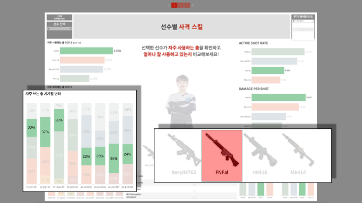
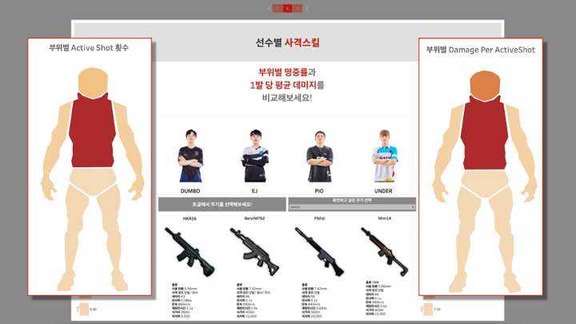

아래의 대시보드에서 선수와 총을 선택하며 사격스킬을 비교해보세요!
대시보드, 이렇게 활용해보세요!
선수가 자주 사용하는 총을 확인하고 얼마나 잘 사용하고 있는지 확인해보세요!
대시보드는 선수가 가장 많이 사용한 총, 자주 획득하는 총, 자주 쓰는 총의 사용 비율 변화,
Active shot rate, 명중률과 Damager per shot 한 발당 데미지,
kill per Activeshot, Groggy per activeshot 등 으로 구성되어있습니다.
EJ 선수를 확인해볼까요? EJ 선수를 클릭해봅니다.
우선 분석 대상이 될 총을 선정하기 위해 선수별로 가장 많이 사용한 총과 획득한 총의 BEST 3을 구했습니다.
EJ 선수는 FNFal을 가장 많이 사용하고, HK416라는 총을 가장 자주 획득했네요!
이렇게 나온 총으로 보여준 사격스킬, 즉 명중률과 한 발당 데미지를 구했습니다.
가장 많이 사용한 총인 FNFal의 한 발 당 데미지가 가장 높습니다.
다음으로는 자주 쓰는 총의 사용 비율 변화를 살펴봤습니다.
제일 왼쪽인 작년 경기부터 올해 경기까지를 나타냅니다.
역시 일정 비율로 FNfal을 꾸준히 사용하고 있다는 것을 알 수 있습니다.

EJ 선수가 선호하는 총 4개의 무기를 지표별로 비교할 수도 있습니다.
HK416 총을 보시면, 명중률이 가장 높은 총이지만 한 발당 데미지는 분석 대상이 된 무기 중 최하위에 있습니다.
이렇게 대시보드를 통해 보니, 한 총에 대해서도 지표 별로 선수의 사격 스킬이 다릅니다.
선수가 자주 사용하는 총의 부위별 명중률과 1발 당 평균 데미지를 비교해보세요!
다음 대시보드는 부위별 명중률과 한 발당 평균 데미지를 선수별로 나타냅니다.
무기별로 그 선수가 어느 부위를 많이 맞췄는지, 어느 부위에 더 많이 데미지를 입혔는지 확인해볼 수 있습니다.
빨강색이 진할수록 많이 맞추고, 데미지를 많이 입힌 부위입니다.
그러니까, 무기별로 많이 명중시킨 부위, 데미지를 많이 입히는 부위가 달라집니다.

EJ 선수를 선택해봅니다.
이 선수가 가장 많이 쓰는 총은 FNFal 이니, 이 총에 대한 정보를 확인해봅니다.
양쪽을 보시면 몸통, 즉 토르소 부위가 가장 빨갛다는 것을 확인할 수 있죠.
토르소를 가장 많이 맞추고, 가장 데미지를 많이 입혔다는 뜻입니다. 1발당 데미지는 54네요.
대부분 Torso를 많이 맞추고 많이 데미지를 입히고 있지만, 한 발당 데미지가 가장 높은 부위는 머리이기 때문에
머리가 붉을 수록 그 선수의 사격 스킬이 더 좋은 것이라고 말할 수 있습니다.
선수가 사용하는 총의 명중률과 1발당 데미지를 전체 평균과 비교해보세요!
이 대시보드를 이용해 특정 '무기'를 얼마나 잘 쓰는지를 기준으로, 선수들의 사격스킬을 비교해볼 수 있습니다.
대시보드 왼편에는 무기인기도를 보여주는 순위가 있고, 오른편에는 해당 무기의 스펙이 있어요.
이걸 기준으로 총기별로 선수들의 사격 스킬을 비교해볼 수 있습니다.
이번에도 EJ선수를 선택해볼게요.
선수들이 가장 좋아하는 총인 HK416을 EJ 선수는 얼마나 잘 쓰고 있을까요?
대시보드 중앙을 보시면, 회색이 전체 선수의 명중률 평균을 보여주고, 노랑색이 EJ 선수의 명중률을 보여줍니다.
전체선수 평균인 회색보다 EJ 선수 스킬인 노랑색 그래프가 좀 더 높습니다.
이걸 보면 EJ 선수의 명중률의 경우, 다른 선수들에 비해 HK416을 꽤 잘 쓰는 선수라고 할 수 있겠어요.
FNFal을 기준으로 EJ 선수와 다른 선수를 비교해보겠습니다.
2HEART 선수의 노란 그래프가 더 높은 것으로 보아 이 총은 2HEART 선수가 더 잘 쓰고 있다고 설명할 수 있습니다.
활용 방법은 무궁무진! 여러분도 직접 해보세요!